|
|
|
For this project, starting with part 1, it was interesting to see how in code we could build the ray generation that was capable of transforming the pixels of an image onto another space in order to make a representation of a ray that would lead to implementation of much more related to the ray itself. It was also nice to implement what we learned in lecture and discussion such as the Möller Trumbore Algo, which was much easier to understand after implementing the ray-triangle intersection test for cumulative scenes and shapes. Then with part 2, we went deeper with using acceleration structures to decrease the rendering time, essentially breaking down the shapes into their own ray intersection test rather than testing the entire box so only those that needed to be logically visible in the medium were visible. In part 3, I learned two ways to realize direct lighting: uniform hemisphere sampling is noisy and inefficient, importance sampling is better; increasing the number of rays can reduce the noise, and importance sampling is better under the same number of instances. In part 4, I learned global lighting with direct and indirect lighting, and simulate the interaction through light bouncing; increasing the depth of rays improves the picture quality but the benefit is diminishing, and the increase in the sampling rate reduces the noise in line with the law. In part 5, I learned adaptive sampling dynamically adjusts the number of pixel samples, judging convergence according to the sample mean and variance, ensuring picture quality while reducing computation, and sampling density is higher in complex regions.
In the start of the rendering pipeline, we want to generate a number of sample rays over a pixel using its coordinate, and to do so in raytrace_pixel(...), I implemented generate_ray(...). With the image space, camera space, and world space, we need to account for the differing dimensions and positions that will be transformed from one space to another to create a ray:
ray(time) = Origin + time * DirectionThe camera space contains the camera sensor plane that is centered at (0,0,-1), along Z=-1. The camera rays will thus point toward the -Z direction with the camera as (0,0,0) looking along the same axis. This is what the image coordinate will be projected upon. To ensure we correctly transform the image coordinates (x,y) from the image space to the camera space onto the sensor, we make use of the sensor’s boundary defined as tan(hFov/2) and tan(vFov/2), respectively using the Field of View angles of both the horizontal X-axis and vertical Y-axis.
//I need to convert hFov and vFov back to radians double hFovRadian = hFov * (M_PI / 180.0); double vFovRadian = vFov * (M_PI / 180.0); topRight.x = 2.0 * tan(hFovRadian / 2.0); topRight.y = 2.0 * tan(vFovRadian / 2.0);This is doubled above to use the sensor’s width and height correctly when scaling the normalized image coordinates (x,y) that are centered to represent the transformed placement onto the camera sensor for what will be the direction vector D of the new ray in camera space. Once scaled, this vector must also be normalized for the ray.
directionCS.x = (x-0.5) * topRight.x; directionCS.y = (y-0.5) * topRight.y; directionCS.z = -1.0; directionCS.normalize();To complete a camera-to-world transform for this ray from camera space into world space, both the origin and direction vector must be transformed and normalized appropriately, with the necessary transformation matrix and origin provided for my implementation of this part.
Vector3D directionWS = c2w * directionCS; //Normalized auto origin = pos; Ray rayInWS = Ray(origin, directionWS); rayInWS.min_t = nClip; rayInWS.max_t = fClip; return rayInWS;With the capability to generate rays, we can use this to check whether a ray intersects with the surface of any geometric shape. Implementations were done for both the ray intersection tests of a triangle and a sphere, checking for the ray based on its origin, direction, and time greater than 0 on if it ever crossed into the surface using not just the ray equation but also an equation representing the respective surface of the shape.
When it comes to testing for ray intersections on a triangle surface, the key optimization here is to use the Möller Trumbore Algorithm, as seen in Slide 20 from the Raytracing Lecture:
//Note: P0 = p1, P1 = p2, P2 = p3 Vector3D O = r.o; Vector3D D = r.d; Vector3D E1 = p2 - p1; Vector3D E2 = p3 - p1; Vector3D S = O - p1; Vector3D S1 = cross(D, E2); Vector3D S2 = cross(S, E1); double t = dot(S2, E2) / dot(S1, E1); double b1 = dot(S1, S) / dot(S1, E1); double b2 = dot(S2, D) / dot(S1, E1); double b3 = 1 - b2 - b1;Another key step in testing for intersection is ensuring that the barycentric and time conditions are met, otherwise loopholes may get by even if there actually is no intersection between the ray and the triangle surface. This includes making sure that time t is within the time range (min_t, max_t), that the time is greater than zero so it goes beyond the origin, and also checking that the barycentric conditions are met within the triangle surface, not existing outside the triangle edge. At the end of both functions, we need to ensure also that the valid time t is set as the new max time of the ray.
if (t < r.min_t || t > r.max_t || t < 0.0) // in triangle intersection
{
return false;
}
if (b1 < 0.0 || b1 > 1.0) //within triangle
{
return false;
}
if (b2 < 0.0 || b2 > 1.0) //within triangle
{
return false;
}
if (b3 < 0.0 || b3 > 1.0) //within triangle
{
return false;
}
r.max_t = t;
Beyond the duplicate process in has_intersection(...) that just checks for an intersection, we also need to supplement the step that function intersect(...) needs to record the intersection using the structure with isect(time of intersection, normal at intersected point, primitive intersected, BSDF of surface).
//use barycentric coords to interpolate the three vertex normals of the triangle Vector3D n_interpolated = (b1*n1) + (b2*n2) + (b3*n3); n_interpolated = n_interpolated.unit(); //populate its input Intersection *isect structure //isect(t, n_interpolated, this, bsdf); r.max_t = t; isect->t = t; isect->n = n_interpolated; isect->primitive = this; isect->bsdf = get_bsdf();
|
|

|
For my implementation of the Bounding Volume Hierarchy (BVH) construction method construct_bvh(...) in which I will construct the tree recursively, I needed to first compute the bounding box (BBox) for the primitives I had ranging in count from the given start to end iterators with a simple for loop.
BBox bbox;
for (auto p = start; p != end; ++p)
{
BBox bb = (*p)->get_bbox();
bbox.expand(bb);
}
Then to begin the process of constructing my BVH, it starts with the root node that contains the whole uncut bounding box of the shapes together.
BVHNode *node = new BVHNode(bbox);I do have to check before even thinking about splitting the box up of whether the node we are on is a leaf node or not by checking if the current start and end iterators have a difference less than or equal to the max leaf size provided. If so, that means the node we created is a leaf node in the tree and we should also update the root node’s start and end iterators with the given ones since there is no change from when they were received before we return the node to end the recursion.
if (max_leaf_size >= (end - start))
{
node->l = nullptr;
node->r = nullptr;
node->start = start;
node->end = end;
return node;
}
If this is not the case with the node size, I move onto using the splitting heuristic that takes the longest axis of the BBox as noted in the Discussion 6 worksheet, and then finding the midpoint along it to set as the split point by using the BBox’s dimension.
double bestX = bbox.max.x - bbox.min.x;
double bestY = bbox.max.y - bbox.min.y;
double bestZ = bbox.max.z - bbox.min.z;
int bestAxis;
if (bestX >= bestY && bestX >= bestZ)
{
bestAxis = 0;
}
if (bestY >= bestX && bestY >= bestZ)
{
bestAxis = 1;
}
if (bestZ >= bestX && bestZ >= bestY)
{
bestAxis = 2;
}
double splitPoint = (bbox.max[bestAxis] + bbox.min[bestAxis]) * 0.5;
Now with the split point set while kept track of with mid, I can move onto the next step of going through each shape in the current BBox and based on their centroid’s positions within the BBox in comparison to the splitpoint, seperate the shapes into two sides upon return.
auto mid = std::partition(start, end, [&](Primitive* p)
{
return p->get_bbox().centroid()[bestAxis] <= splitPoint;
});
The job is not done yet in this function however, as we have to watch out for the edge case where one side of the split point may have no primitives, or in other words where the mid tracker may be the beginning of the first primitive in order or the ending of the last primitive in order, meaning there are no shapes on one side or the other. In this case, we must prevent an infinite recursive loop from happening, and do so by setting the leaf nodes of the current node as null, along with leaving the start and end iterators as is to not signify any sort of change upon return.
if (mid == start || mid == end) {
node->l = nullptr;
node->r = nullptr;
node->start = start;
node->end = end;
return node;
}
At the end, all that’s left if applicable is to continue recursively calling the current node’s left and right children nodes to continue constructing the BVH tree.
node->l = construct_bvh(start, mid, max_leaf_size); node->r = construct_bvh(mid, end, max_leaf_size); return node;
|
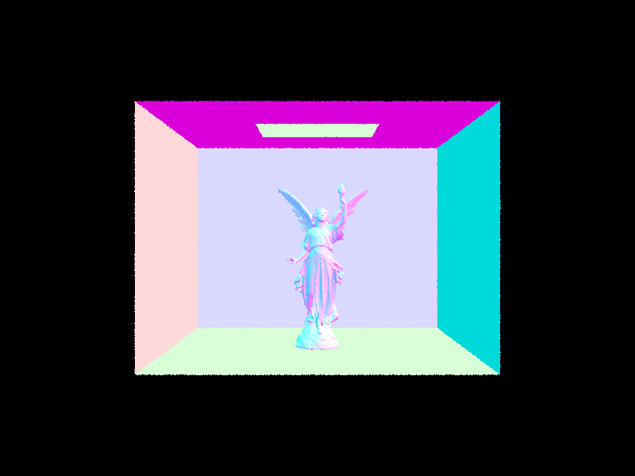
|
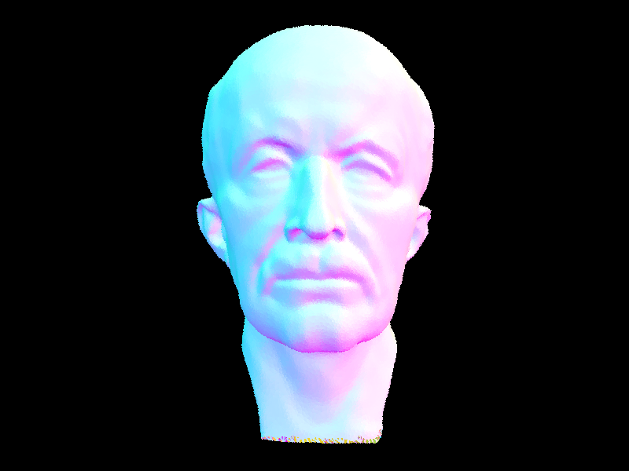
|
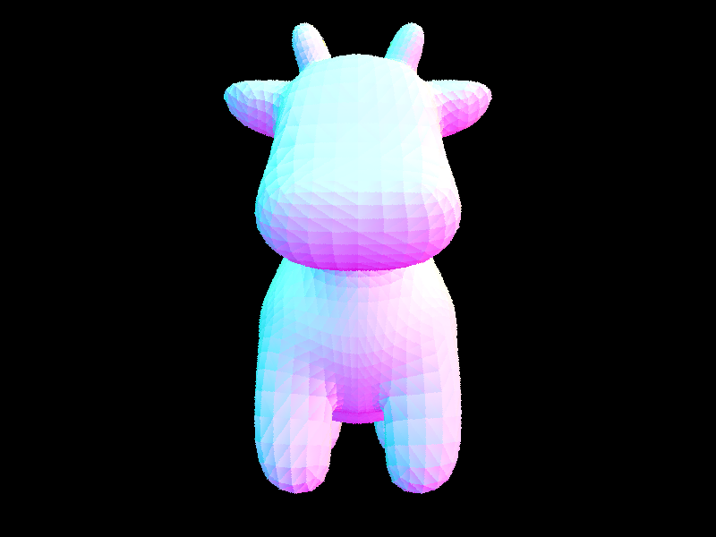
|
Rendering times before implementing BVH acceleration proved to take quite a while, much more than the expected with some rendering taking close to an hour, although those that did may have been an outlier or caused by an unwanted error. Using the acceleration structures however sped up the rendering time much faster than before, with a large noticeable difference that didn't cause any need for worry. It seemed to not be linear with the primitives present as there were many things to factor such as the shape itself and the amount of primitives that were being broken down for each ray intersection test. It proved how the benefit of using BVH to break down the cluster of shapes into their own individual test and ensuring render time is cut only for those that actually intersect with the rays.
In this assignment, I implemented two different direct illumination estimation methods: uniform hemispherical sampling and importance sampling.
Uniform Hemisphere Sampling: In this method, I uniformly sample directions in the hemisphere around the intersection point. For each sampled direction, I check if the ray emitted along that direction intersects with the light source. If it does, I calculate the contribution of the incoming light in that direction to the final color. The specific implementation steps are as follows:
1. Use the local coordinate system (o2w and w2o matrices) to convert the world coordinate system to a local coordinate system with the surface normal as the z-axis
2. Use UniformHemisphereSampler3D to generate random directions uniformly distributed in the hemisphere
3. Convert the sampled direction back to the world coordinate system
4. Create a ray from the intersection point along the sampled direction and check if it intersects with the light source
5. If it intersects, calculate the BSDF value, cosine term, and PDF, then accumulate the contribution
6. Finally, divide the result by the number of samples to get the final direct illumination estimate
Importance Sampling: In this method, I directly sample the light sources in the scene instead of uniformly sampling in the hemisphere. This method is more efficient because it concentrates sampling on the areas that truly contribute to the result. The specific implementation steps are as follows:
1. Traverse all light sources in the scene
2. For each light source, use the sample_L function to get the direction, distance, and PDF from the intersection point to the light source
3. Check if the light source is on the front side of the surface (by checking if wi.z is greater than 0 in the local coordinate system)
4. Create a "shadow ray" from the intersection point to the light source and check if there is an object blocking the ray
5. If there is no blocking, calculate the BSDF value, cosine term, and PDF, then accumulate the contribution
6. For point lights, only sample once; for area lights, multiple samples are needed to achieve soft shadow effects
The main difference between these two methods lies in the sampling strategy. Uniform hemispherical sampling uniformly samples in the hemisphere, and most samples may not hit the light source, resulting in higher variance and noise. On the other hand, importance sampling directly samples the light sources, reducing variance and producing smoother results, especially for smaller light sources.
| Uniform Hemisphere Sampling | Importance Sampling |
|---|---|
|
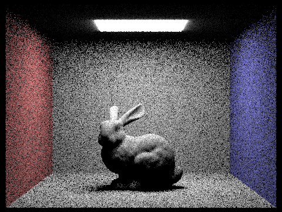
|
|
|
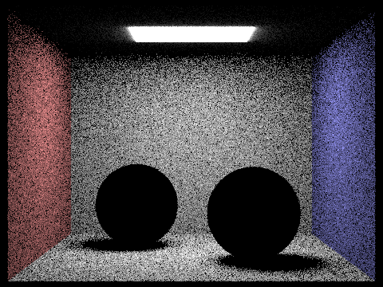
|
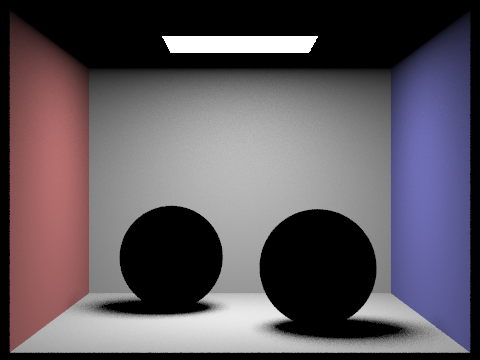
|
|
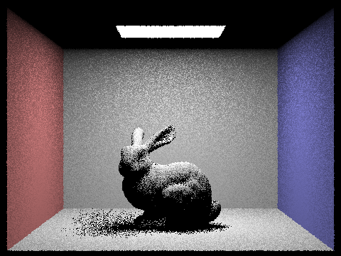
|
|
|
|
|
By comparing the rendering results with different numbers of light rays, we can clearly see that the noise in soft shadows decreases as the number of samples increases. When using 1 light ray, the soft shadow area shows obvious grainy noise, and the shadow edge is very rough. When increasing to 4 light rays, the noise decreases, but the shadow edge is still not smooth. After using 16 light rays, the quality of the soft shadow significantly improves, with the noise greatly reduced and the shadow transition becoming more natural. Finally, when using 64 light rays, the soft shadow has almost no visible noise, showing a very smooth transition effect, especially in the shadow areas around the bunny and at the bottom. This clearly shows how increasing the number of light rays improves rendering quality, especially in areas that require precise light integration, such as soft shadows.
By comparing the results of uniform hemisphere sampling and light sampling (importance sampling), we can clearly see that importance sampling produces higher quality images with the same number of samples. The uniform hemisphere sampling method randomly samples directions in the hemisphere, and most samples may not hit the light source, resulting in high variance and obvious noise, especially in the shadow areas and the edges of light changes. In contrast, importance sampling directly samples the light sources in the scene, greatly improving sampling efficiency, reducing variance, and producing smoother results. This difference is particularly noticeable in scenes with small light sources, because uniform hemisphere sampling is almost impossible to randomly hit small light sources, while importance sampling directly samples the light sources. In addition, importance sampling can correctly handle point lights, while uniform hemisphere sampling is almost impossible to randomly hit point lights. In general, importance sampling is superior to uniform hemisphere sampling in terms of computational efficiency and image quality, especially in complex lighting conditions.
In this assignment, I implemented the global illumination (Global Illumination) function, which allows the rendered image to include the effect of multiple bounces of light. The implementation mainly includes the following parts：
1. DiffuseBSDF::sample_f function:
This function is used to sample the diffuse material, it receives the outgoing direction wo, and returns the incoming direction wi and the corresponding probability density function pdf. I used the cosine-weighted hemisphere sampler to generate the incoming direction, which can more effectively concentrate sampling on the directions that contribute more to the final result. The function returns the value of BSDF on the given incoming and outgoing directions. The code implementation is as follows:
Vector3D DiffuseBSDF::sample_f(const Vector3D wo, Vector3D *wi, double *pdf) {
*wi = sampler.get_sample(pdf);
return f(wo, *wi);
}
Vector3D PathTracer::at_least_one_bounce_radiance(const Ray &r, const Intersection &isect) {
// Set the local coordinate system
Matrix3x3 o2w;
make_coord_space(o2w, isect.n);
Matrix3x3 w2o = o2w.T();
Vector3D hit_p = r.o + r.d * isect.t;
Vector3D w_out = w2o * (-r.d);
Vector3D L_out(0, 0, 0);
// Add direct illumination
L_out += one_bounce_radiance(r, isect);
// If the maximum depth is reached, stop the recursion
if (r.depth <= 0) {
return L_out;
}
// Russian Roulette termination probability
double terminate_prob = 0.3;
if (r.depth < max_ray_depth && coin_flip(terminate_prob)) {
return L_out;
}
// Sample a new light direction
Vector3D w_in;
double pdf;
Vector3D f = isect.bsdf->sample_f(w_out, &w_in, &pdf);
Vector3D w_in_world = o2w * w_in;
// Create a new ray
Ray next_ray(hit_p, w_in_world);
next_ray.min_t = EPS_F;
next_ray.max_t = INF_D;
next_ray.depth = r.depth - 1;
// Trace the ray and recursively calculate
Intersection next_isect;
if (bvh->intersect(next_ray, &next_isect)) {
Vector3D indirect = at_least_one_bounce_radiance(next_ray, next_isect);
double cos_theta = w_in.z;
double rr_factor = (r.depth < max_ray_depth) ? 1.0 / (1.0 - terminate_prob) : 1.0;
L_out += rr_factor * f * indirect * cos_theta / pdf;
}
return L_out;
}
Vector3D PathTracer::est_radiance_global_illumination(const Ray &r) {
Intersection isect;
Vector3D L_out;
// If there is no intersection, return the environment light or black
if (!bvh->intersect(r, &isect)) {
return envLight ? envLight->sample_dir(r) : L_out;
}
// Calculate zero-bounce (emissive)
L_out = zero_bounce_radiance(r, isect);
// If max_ray_depth > 0, calculate multiple bounces
if (max_ray_depth > 0) {
L_out += at_least_one_bounce_radiance(r, isect);
}
return L_out;
}
void PathTracer::raytrace_pixel(size_t x, size_t y) {
Vector3D integSum(0,0,0);
for (int i = 0; i < ns_aa; i++) {
Vector2D samp = gridSampler->get_sample();
double x_norm = (x + samp.x) / sampleBuffer.w;
double y_norm = (y + samp.y) / sampleBuffer.h;
Ray randomRay = camera->generate_ray(x_norm, y_norm);
randomRay.depth = max_ray_depth; // Initialize the depth of the ray
Vector3D integRadiance = est_radiance_global_illumination(randomRay);
integSum += integRadiance;
}
Vector3D pixelRadiance = integSum / ns_aa;
sampleBuffer.update_pixel(pixelRadiance, x, y);
}
|
|
|
|
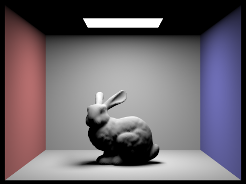
|
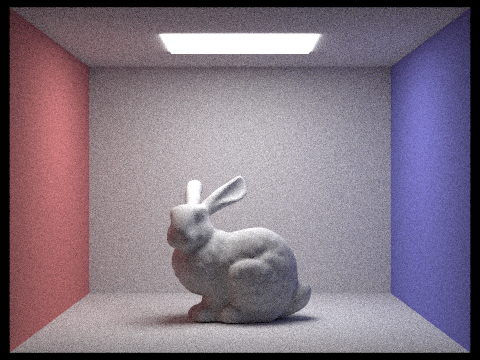
|
The above comparison shows the rendering effects of only direct illumination and only indirect illumination. In the image with only direct illumination, we can see the bright areas created by the light from the light source directly illuminating the scene, as well as the clear shadows produced by this. The light only propagates from the light source directly to the object surface and then reflects to the camera, so the shadow boundary is clear, and no light can reach the occluded area.
In the image with only indirect illumination, there are no light rays directly from the light source, and all lighting comes from light bouncing in the scene. This indirect illumination produces a softer lighting effect, especially in the shadow areas, making the scene look more natural. It can be observed that even in areas without direct illumination (such as the bottom and back of the bunny), light from surrounding surfaces can be received, producing a soft lighting effect.
The combination of these two lighting methods can produce a realistic global illumination effect. Direct lighting provides basic light and dark contrast and primary shadows, while indirect lighting fills shaded areas and provides more natural lighting transitions and color interactions, making the whole scene look more realistic and coordinated.
|
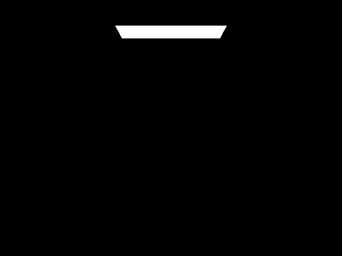
|
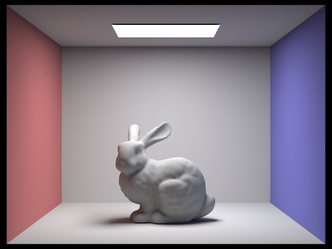
|
|
|
|
|
|
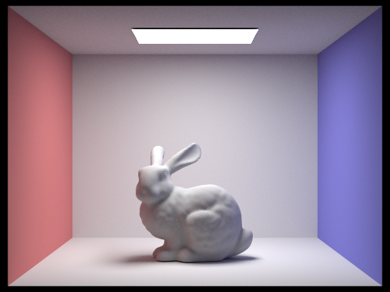
|
The above figure shows the effect of different light bounce depths (max_ray_depth) on the rendering results. When max_ray_depth = 0, only the emissive objects (such as the light source) are visible, and all other objects in the scene are completely black. When max_ray_depth = 1, we can see the effect of direct illumination, where the object surface is directly illuminated by the light source, producing basic light and dark and shadows.
When max_ray_depth = 2, the light can bounce twice, and we begin to see the effect of indirect illumination, such as the influence of the reflected color of the walls on the bunny. Notably, the second bounce of the light makes areas that were originally in the shadow able to receive light, which is an effect that traditional rasterization rendering cannot achieve. For example, it can be observed that the area of the bunny's bottom and back is no longer completely dark, but is illuminated by the reflected light from the surrounding walls, showing a soft indirect lighting effect.
When max_ray_depth = 3, the light can bounce three times, and the effect of indirect illumination becomes more obvious. The third bounce of the light further enhances the uniformity of light in the scene, allowing light to reach more hidden areas, such as the shadow areas where the bunny touches the ground and the corners of the walls. This multiple bounce of the light simulates the complex interactions of light between different surfaces in the real world, producing more realistic visual effects, which is impossible to achieve with traditional rasterization rendering.
When max_ray_depth increases to 5 and 100, the rendering quality continues to improve, but the improvement gradually decreases because the contribution of each additional light bounce to the final image becomes smaller. In practice, usually max_ray_depth = 3 to 5 is enough to produce visually satisfactory results, and higher values will significantly increase computational costs but only bring minor quality improvements.
Compared to traditional rasterization rendering, path tracing can naturally simulate global illumination effects, including soft shadows, color bleeding, ambient occlusion, and indirect lighting, making the rendered results more realistic and rich. Although the computational cost of path tracing is higher, it can produce images of higher quality and more in line with physical laws.
|
|
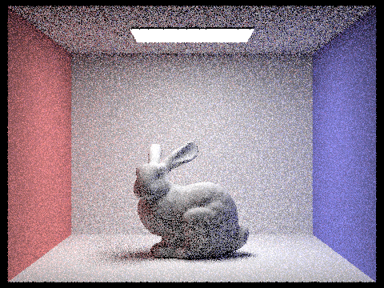
|
|
|
|
|
|
|

|
The above figure shows the effect of different pixel sampling rates (samples per pixel) on the rendering quality. When the sampling rate is 1, the image is filled with noise, and the edge jaggies are obvious, almost impossible to recognize the scene details. As the sampling rate increases, the noise gradually decreases, and the image quality improves significantly.
When the sampling rate is 2 and 4, although the noise is still obvious, the main features of the scene can be recognized. Especially in areas with large lighting changes (such as shadow edges and high-light areas), the noise is most obvious. This is because the variance of the Monte Carlo integral in these areas is high, and more samples are needed to obtain an accurate estimate.
When the sampling rate reaches 8 and 16, the image quality improves significantly, with the noise decreasing and the edges becoming smoother. At this point, most areas have presented relatively clear details, but some noise points can still be observed in complex lighting areas.
When the sampling rate is 64, the image is already quite clear, with only minor noise in some complex lighting areas (such as shadow edges and areas with obvious indirect lighting). This level of image quality is already sufficient for many practical application scenarios.
Finally, when the sampling rate reaches 1024, the image almost has no visible noise, showing a smooth and realistic lighting effect. All areas, including complex lighting interaction areas, are accurately rendered.
This comparison clearly shows the effect of sampling rate on convergence speed and final image quality in Monte Carlo path tracing. According to the theory of the Monte Carlo method, the error is inversely proportional to the square root of the number of samples, which means that to halve the noise, four times the number of samples are needed. This also explains why the quality improvement from 64 samples to 1024 samples is relatively small, while the computational cost increases by 16 times.
In practice, it is necessary to find a balance between rendering time and image quality, usually selecting an appropriate sampling rate based on the complexity of the scene and the requirements. For preview and debugging, a lower sampling rate can be used; for final rendering, a higher sampling rate can be used to obtain high-quality results.
Adaptive sampling is a technique to optimize the efficiency of path tracing rendering, which dynamically adjusts the number of samples for each pixel based on the complexity of different regions in the image. The traditional path tracing method uses a fixed number of samples for each pixel, which wastes computational resources in simple areas (such as pure background colors) and may sample insufficiently in complex areas (such as shadow edges and high-light areas), resulting in noise. Adaptive sampling concentrates computational resources on more difficult convergence areas while maintaining image quality and reducing overall computational cost.
The implementation is based on the concept of confidence interval in statistics, with the following specific steps:
1. Initialize statistical variables:
- For each pixel, I maintain two accumulated variables: the sum of sample radiance s₁ and the sum of sample radiance squared s₂
- These variables are used to calculate the mean and variance of the samples, without storing each individual sample value
2. Batch sampling and convergence check:
- Update s₁ and s₂ after each sample
- Check convergence every samplesPerBatch (default 64) samples
- Calculate the mean μ = s₁/n of the current sample
- Calculate the sample variance σ² = (s₂ - s₁²/n)/(n-1)
- Calculate the half-width I = 1.96·σ/√n of the confidence interval (1.96 corresponds to 95% confidence level)
3. Convergence judgment:
- If I ≤ maxTolerance·|μ| (default maxTolerance is 0.05), the pixel is considered converged
- Check convergence for each of the RGB three channels, and only stop sampling when all channels have converged
- If the pixel has not converged and the maximum number of samples (ns_aa) has not been reached, continue sampling
4. Result recording:
- The final pixel value is the average of all samples
- Record the number of samples actually used for each pixel into sampleCountBuffer, which is used to generate the sampling rate visualization image
The core part of the code implementation is as follows:
// Initialize variables
int num_samples = 0;
Vector3D s1(0, 0, 0);
Vector3D s2(0, 0, 0);
Vector3D integSum(0, 0, 0);
// Sample at most ns_aa times
for (int i = 0; i < ns_aa; i++) {
// Generate and trace rays
Vector2D samp = gridSampler->get_sample();
double x_norm = (x + samp.x) / sampleBuffer.w;
double y_norm = (y + samp.y) / sampleBuffer.h;
Ray randomRay = camera->generate_ray(x_norm, y_norm);
randomRay.depth = max_ray_depth;
Vector3D integRadiance = est_radiance_global_illumination(randomRay);
integSum += integRadiance;
// Update statistics
s1 += integRadiance;
s2 += integRadiance * integRadiance;
num_samples++;
// Check convergence every samplesPerBatch samples
if (num_samples % samplesPerBatch == 0) {
// Calculate the mean
Vector3D mean = s1 / num_samples;
// Calculate the variance and standard deviation
Vector3D variance = (s2 - (s1 * s1) / num_samples) / (num_samples - 1);
variance.r = std::max(0.0, variance.r);
variance.g = std::max(0.0, variance.g);
variance.b = std::max(0.0, variance.b);
Vector3D stddev(sqrt(variance.r), sqrt(variance.g), sqrt(variance.b));
// Calculate the half-width I of the confidence interval
double I_r = 1.96 * stddev.r / sqrt(num_samples);
double I_g = 1.96 * stddev.g / sqrt(num_samples);
double I_b = 1.96 * stddev.b / sqrt(num_samples);
// Check convergence conditions
bool r_converged = I_r <= maxTolerance * fabs(mean.r);
bool g_converged = I_g <= maxTolerance * fabs(mean.g);
bool b_converged = I_b <= maxTolerance * fabs(mean.b);
// If all channels have converged, stop sampling
if (r_converged && g_converged && b_converged) {
break;
}
}
}
// Update pixel values and sample counts
Vector3D pixelRadiance = integSum / num_samples;
sampleBuffer.update_pixel(pixelRadiance, x, y);
sampleCountBuffer[x + y * sampleBuffer.w] = num_samples;
|
|
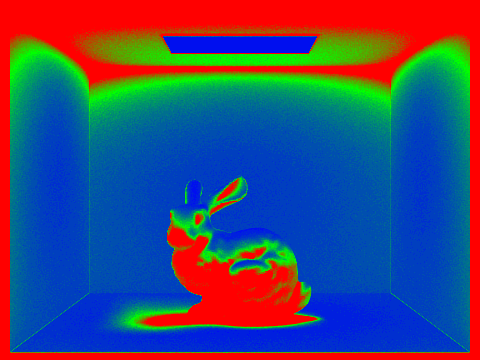
|
|
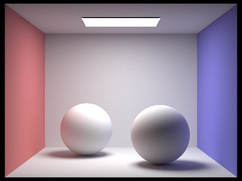
|
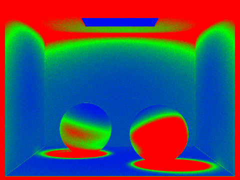
|
The above figure shows the two scenes rendered with adaptive sampling and their corresponding sampling rate images. In the sampling rate image, blue represents low sampling rate areas, and red represents high sampling rate areas.
CBbunny scene analysis:
In the CBbunny scene, we can clearly see that the sampling rate distribution is highly correlated with the scene complexity. The sampling rate is lower in areas with uniform colors (such as the background walls), because these areas are easy to converge. In the contour edges of the bunny model, shadow edges, and areas with obvious lighting changes, the sampling rate increases significantly. Especially in the areas where the bunny touches the ground, the edges of the bunny's ears, and the soft edges of the shadows, these areas have high complexity in lighting calculation, and more samples are needed to reach the convergence standard.
CBspheres_lambertian scene analysis:
In the CBspheres_lambertian scene, the high-light areas between the spheres, the shadow areas between the spheres, and the areas where the spheres touch the ground all show a higher sampling rate. These areas have significant lighting changes, and more samples are needed to accurately capture the lighting details. In contrast, the background walls and the majority of the ground areas have a lower sampling rate, because these areas have relatively stable color and brightness changes. The contour edges of the spheres also require a higher sampling rate, because these areas have obvious geometric boundaries and lighting changes.
The effect of adaptive sampling:
By comparing the sampling rate images and rendering results of these two scenes, we can see that adaptive sampling successfully concentrates computational resources in the most needed areas while reducing computational resources in simple areas. This method significantly improves rendering efficiency while maintaining image quality. If a uniform sampling rate (such as using 2048 samples for all pixels) is used, the rendering time will increase significantly, but the improvement in image quality will not be obvious.
Another advantage of adaptive sampling is that it can automatically adapt to the complexity of different scenes. In simple scenes, most pixels may only need a few samples to converge; in complex scenes, the algorithm will automatically increase the number of samples to ensure image quality. This adaptability makes the renderer work efficiently in various scenes, without the need to manually adjust parameters.
In Part 1 Task 1, I initially didn’t understand that the formula for calculating the image-to-sensor transformation needed to be doubled and figured they would suffice just as tan(hFov/2), which led to errors in my images. I tried using ChatGPT to help me find the issue in my code but I still didn't figure it out, so I went to office hours where I then got help which led to me understanding my initial error.
In Part 2, Task 1, I was unsure how exactly I would create or go about splitting the primitives up while using the start and end iterators, as I double checked there was no provided function to do so. I finally asked ChatGPT for help, to which it provided me the following lines of code to use in order to divide them up, which I don’t think I would’ve ever gotten myself if this is the most common or expected way:
auto mid = std::partition(start, end, [&](Primitive* p)
{
return p->get_bbox().centroid()[bestAxis] <= splitPoint;
});